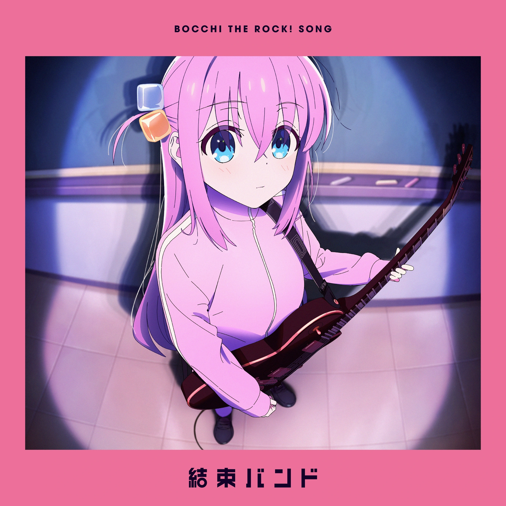
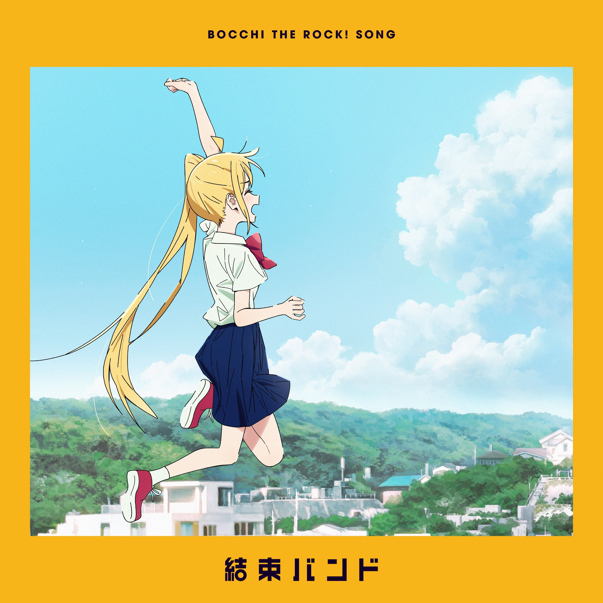
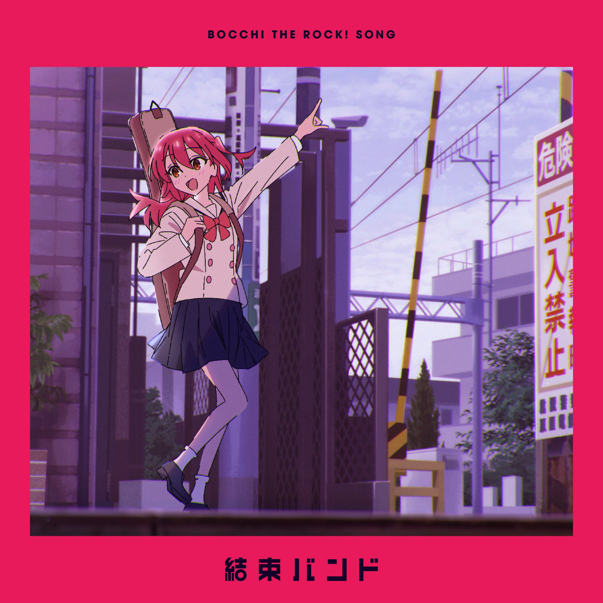
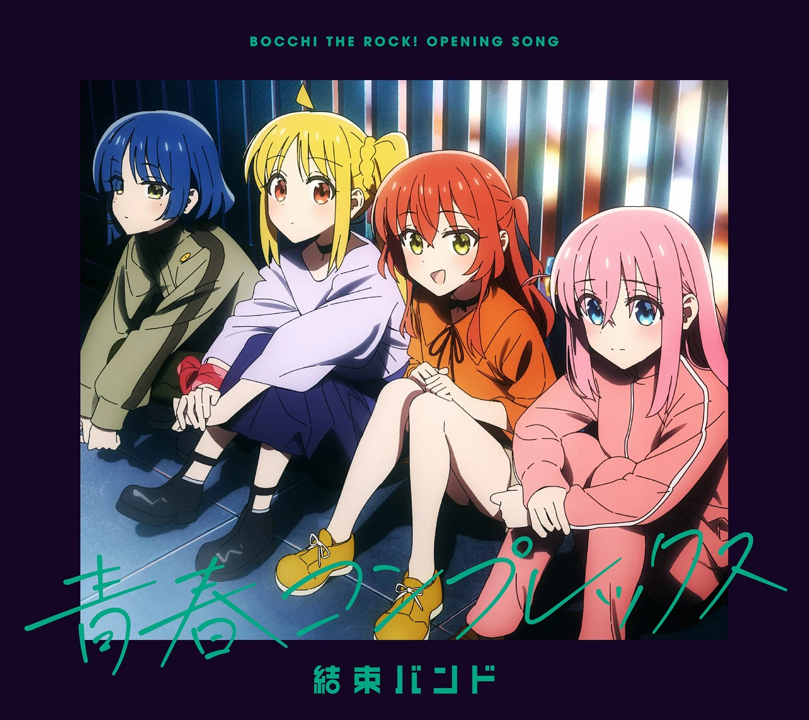

That Band
A música “あのバンド (That band)”, da Kessoku Band, explora de forma direta a relação intensa e ambígua que a personagem tem com a música. O som da banda admirada é descrito como algo que pode ser tanto divertido, representado por risadas agudas, quanto desconfortável, como o alarme estridente de uma passagem de trem. Essa dualidade mostra que a música pode inspirar, mas também provocar inquietação e até dor, funcionando como um reflexo das emoções internas da narradora.
No contexto do anime “Bocchi te Rock!”, a letra ganha ainda mais profundidade ao abordar temas como busca por identidade e pertencimento. O refrão destaca o desejo de ouvir apenas o próprio som e o batimento do próprio coração: “outros sons não quero ouvir, só o som que eu faço”. Isso revela uma necessidade de isolamento e autossuficiência emocional. A metáfora do trem e do embarque solitário — “não me empurre, o trem já está chegando... só eu sou a passageira” — reforça a sensação de solidão e a coragem de seguir um caminho próprio, mesmo que isso signifique se afastar dos outros. A letra também sugere que, para alguns, a música pode ser um “gesso”, algo que limita, mas para a narradora é um espaço de liberdade, mesmo com dúvidas e erros. Assim, a canção reflete honestamente sobre como a música pode ser tanto um refúgio quanto um desafio na construção da identidade pessoal.

Guitar, Loneliness and Blue Planet
"Guitar, Loneliness And Blue Planet", da Kessoku Band, retrata de forma direta o isolamento vivido por Hitori Gotō, protagonista do anime "Bocchi the Rock!". A música utiliza a imagem do "planeta azul" para simbolizar a solidão em meio à imensidão do mundo. O verso “青い惑星ひとりぼっち” (planeta azul, sozinha) expressa como Hitori se sente pequena e invisível, mesmo cercada por pessoas e sons, reforçando o tema central do anime sobre a busca por pertencimento e identidade.
A letra aborda a dificuldade de se expressar e ser notada, como em “足りない足りない誰にも気づかれない” (não é suficiente, ninguém percebe), e a sensação de sufocamento diante da pressão social e do excesso de informações, refletida em “息もできない情報の圧力” (pressão de informações que não me deixa respirar). A música surge como o único canal de expressão verdadeira para Hitori, evidenciado em “馬鹿な私は歌うだけ” (eu, tola, só consigo cantar). Mesmo insegura e com medo de julgamentos, ela encontra na arte uma forma de afirmar sua existência. O trecho “ぶちまけちゃおうか星に” (despejar tudo nas estrelas) simboliza o desejo de ser ouvida, ainda que por um instante. O contexto do anime e as declarações sobre a composição mostram que a canção reflete a luta de Hitori para superar a timidez, buscar conexão e transformar a solidão em música, usando a guitarra como instrumento de libertação e comunicação.

Never Forget
"Never Forget", da Kessoku Band, explora como momentos simples da adolescência podem se tornar lembranças valiosas. A letra transforma situações desconfortáveis, como o "trem lotado" ou a "sala de aula empoeirada", em símbolos de nostalgia, mostrando que até experiências comuns têm seu valor. O verso “ぜったいわすれてやらないよ” (“Nunca vou esquecer”) expressa o compromisso de guardar essas vivências, mesmo as marcadas por insegurança ou constrangimento.
No contexto do anime "Bocchi the Rock!", a música ganha ainda mais significado, pois é apresentada em um momento de celebração do crescimento e união dos personagens. A letra aborda o amadurecimento, destacando o conflito entre o desejo de se destacar e o medo de ser diferente, como em “きらいなぼくのれっとうかんと たにんとちがうゆうえつかんと せめぎあうぜつめいなかんじょう” (“O sentimento de inferioridade que odeio e o orgulho de ser diferente dos outros lutam dentro de mim”). Além disso, a canção reconhece a passagem do tempo e incentiva a valorizar cada instante, mesmo os mais simples, como o som do sino ou o cheiro da sala de aula. "Never Forget" transmite uma mensagem de aceitação e gratidão pelo cotidiano, incentivando a seguir em frente sem perder o apreço pelas pequenas coisas da vida.

if I Could Be a Constellation
Em "Seiza Ni Naretara", da Kessoku Band, a metáfora de se tornar uma constelação ao lado de outra pessoa expressa o desejo de pertencimento e conexão, especialmente para quem se sente sozinho. O verso “どんなに探してみても ひとつしかない星” ("Por mais que eu procure, só existe uma estrela") destaca a solidão, enquanto a ideia de estrelas solitárias formando constelações simboliza a esperança de que relações verdadeiras podem transformar o isolamento em algo significativo. O contexto do anime "Bocchi the Rock!" e a performance da personagem Hitori Gotou, que improvisa após um imprevisto, reforçam a mensagem de adaptação e superação, mostrando a importância de manter os laços mesmo diante de dificuldades inesperadas.
A letra também aborda a vulnerabilidade diante da possibilidade de separação, como em “月が綺麗で泣きそうになるのは いつの日にか別れが来るから” ("A lua está tão bonita que quase me faz chorar, porque um dia a despedida virá"). Esse sentimento de transitoriedade é equilibrado pelo desejo de criar algo duradouro ao se unir a outros, mesmo que "não sejamos uma lua cheia que ilumina a escuridão". O pedido “繋いだ線ほどかないで” ("não desfaça as linhas que conectamos") traduz a esperança de que, juntos, mesmo pessoas tímidas ou solitárias possam brilhar e ser reconhecidas, assim como as estrelas que formam constelações visíveis no céu.

Seishun Complex
"Seishun Complex", da Kessoku Band, explora de forma direta a tensão entre o desejo de se conectar com os outros e o medo de se expor. A letra apresenta uma personagem que busca um "lugar iluminado", mas se sente mais segura em ambientes escuros e apertados, o que simboliza tanto o isolamento quanto a proteção contra a vulnerabilidade. Esse contraste reflete o contexto do anime "Bocchi the Rock!", onde jovens músicos enfrentam desafios sociais e emocionais, e aparece também na estrutura da música, que alterna momentos introspectivos com refrões intensos.
A canção utiliza imagens como "chuva", "tempestade" e "mar" para representar emoções turbulentas e a vontade de romper o silêncio interior. O verso "fazer trovejar o relâmpago com o fuzz da luz" sugere o desejo de transformação, usando a música para expressar sentimentos reprimidos e buscar uma mudança pessoal. Já o trecho "eu gostava de músicas tristes porque me faziam sentir gentil" mostra como a tristeza pode ser acolhida na juventude, funcionando tanto como refúgio quanto como impulso para mudança. Assim, "Seishun Complex" retrata a complexidade da juventude, marcada por inseguranças, impulsos contraditórios e a busca por pertencimento, tudo isso embalado por uma sonoridade vibrante que contrasta com a vulnerabilidade das palavras.